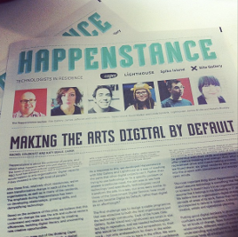
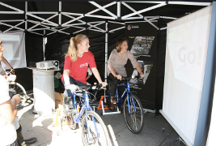

What people say about me:
“Linda, you are the balls of this group”
Sebastian Marenius - Hyper Island classmate
“You're Wozniak”
an "insult" from Aral Balkan
I'm currently a Knight-Mozilla OpenNews fellow at the Guardian, a creative technologist & proto-MacGyver who likes to make things that inform, educate, and empower people and communities. My main interests in news are sensor journalism and newsgames, I have also enjoyed helping the data team do training for reporters. I run a monthly newsgames meetup.
Previously I've worked in local government, and my particular interests lie in using play and technology to help people discover their natural affinity for teaching themselves new things. I have a passion for open data, open knowledge, and serious games. Previously I've done Happenstance project, UX internship at Last.fm and co-founded Code Club. I'm currently based in Hackney, London but am willing to relocate. I enjoy speaking at events, especially running workshops.
“Linda, you are the balls of this group”
Sebastian Marenius - Hyper Island classmate
“You're Wozniak”
an "insult" from Aral Balkan
“Basically this generation's Tim Hunkin”
@tef
Named one of 10 Tech Heroes for Good by NESTA, they wrote a profile on me.
that I would would like to do more of, or similar things...
I was given a bursary from the Writing Platform and Bath Spa university to collaborate as a creative technologist with writer Kelly Jones. We made a sound sculpture called 1.4 for copy, more info.
Client: Nesta/Scouts
I got to make activities and lesson plans that Scout leaders can carry out with their group, to make things like websites, games and robots. I got to travel around the country and test out activities with different groups, with participants ages 6 to 14. Loads of fun was had by all :D
Launched January 2014, more info
Client: The Urban Environment Agency, the Municipality of Oslo
The Municipality of Oslo runs yearly "attitude campaigns" to reduce littering. I showed them a video of a talking trash can done as a half-day experiment for the Fun Theory in Sweden. We decided to make a two week long campaign with the rubbish bins in downtown Oslo.
Client: Nesta/Spike Island art gallery
The Happenstance project was about putting digital thinking at the heart of arts organisations. I was lucky to be a creative technologist in residence at an art gallery, where I got to play with all kinds of gadgets and sensors, as well as running arduino workshops, teach agile methodologies, and even organise a design jam. Favourite moment: Setting up a little polaroid printer to print out pictures people took around the gallery and artist's studios, which were then exhibited in the art gallery. Take that secondary school teacher who failed me in art!
Client: The Urban Environment Agency, the Municipality of Oslo
The Municipality of Oslo asked me to make some flyers and a website for their upcoming campaign to encourage cycling during European Mobility week. However flyers are boring and instead I made a cycling game, using actual cycles as the controllers. They took the cycles with them on the various stands and fairs, and got people to get on the cycles and play the game to win prizes.
in 2012 I co-founded a nationwide network of volunteer-lead after-school clubs to teach children programming, together with UX designer Clare Sutcliffe. I had the most fun going around to shcools and developing the teaching materials that were to be used by all the volunteers. There's over 3000 clubs currently running in the UK today. I had to resign due to reasons.
BSc In Philosophy & Computer Science, University of Warwick, 2004-2007
Digital Media Creative, Hyper Island, Stockholm 2009-2011
Kite mapping, balloon mapping, aerial photography, hiking, kayaking, horseback riding, traveling to cold, remote places.